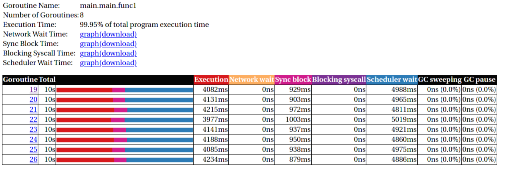

Agenda
- Intro
- Parallel primitives
- Parallel problems
- Parallel patterns
- A hard problem
Examples in this workshop will be in Go. Reason: It's rather simple there. C requires pthreads, which is a bit of an arcane library. Python has threads, but they suck greatly (GIL). Other languages like Javascript are single threaded by nature (well, there are web workers, but that's embarassing). Parallel programming in bash would be fun, but you might not share my sense of humor.

Parallel programming
»The art of distributing work to maximize the use of resources with minimal overhead.«
(while not shooting yourself in the knee by getting confused with the mindboggling behemoth you created)
It really is an art, since there are no easy guidelines.
There are two ways to be comfortable writing parallel code:
- Being very experienced and having made a lot of mistakes.
- Being fearless and not be aware of the possible problems.
Rule of thumb 👍
Don't. ¹
¹ Unless you really, really need the performance and you proved this by benchmarks.
Just to repeat: Concurrency hurts readability, will almost inevitably cause bugs and eat your hamster. Proceed at your own risk.
If you write the code as cleverly as possible, you are, by definition, not smart enough to debug it.
Especially true for parallel programming as our brain is really not build to think this way. So our mind's horizon is never far away when doing parallel programming.
Concurrent vs Parallel #1
Please define it.
Concurrent = execution might be interrupted at an time. Parallel = several instructions get executed at the same time.
Concurrent vs Parallel #2

What are processes?
- Processes are a lightweight way to schedule work over all available cpu cores.
- Processes get started by fork() (except PID 1)
- Processes focus on memory isolation - memory can only be shared via IPC (unix sockets, pipes, shared memory, network...)
- Processes have their own ID (PID)
What are threads?
- Threads are lightweight processes (again?)
- Threads get started by pthread_create() (except first thread, which exists implicitly)
- Threads share the heap of the process but have each their own stack
- Threads have their own ID (TID)
Threads are scheduled like processes by the kernel. No real difference is made between processes and threads in that regard.
What are coroutines?
- Coroutines are lightweight threads (oh come on)
- Coroutines are implemented completely in user space using a scheduler
- Every detail depends on the individual programming languages' implementation
- Goroutines are one example of a coroutine implementation. Fibers are another often used term.
- Not a kernel concept, kernel scheduler does not care.
Good example of software evolution. Old concepts are never cleaned up. Just new concepts get added that enhance (in the best case) the old concepts. I call this toilet paper development: If it stinks, put another layer over it.
In case of Go, there is a scheduler that is started inside every program written in Go. It starts a number of threads (see GOMAXPROCS) and schedules the set of go routines over the set of threads.
Summary

A word of warning ⚠

Benchmark of a webserver handling dummy requests:
- forking: Spawn a new process per request.
- preforking: Use a pool of worker process.
- threaded: Spawn a new thread per request.
- prethreaded: Use a pool of woerk threads.
- poll: Single threaded using the poll() syscall.
- epoll: Single threaded using the epoll() syscall.
"Concurrency" is the number of requests per sec thrown at the server, y axis is the actual handled requests.
Just throwing multithreading on a problem makes it complex, but does not necessarily solve it.
Source: https://unixism.net/loti/async_intro.html
More details on the individual benchmarks:
https://unixism.net/2019/04/linux-applications-performance-introduction
Most of the time, when used in the right dose, multithreaded programming can easily speed up things. That's why this part of the workshop focuses more on the safe use of parallel programming instead of squeezing every last bit of performance out of parallel programming. Multiple threads are basically a single optimization and deserve their own chapter therefore.
The contents in this part of the workshop are best applied with the understanding of the CPU and Memory chapters.
Preemption

Linux' scheduling is preemptive. This means that a high priority task can be worked on by interrupting a task with lower priority.
Preemption points: The scheduler can interrupt a process at pretty much any point in time. Normally this happens in any of those cases:
- Process used up their time share.
- Process made a syscall. While execution happens in kernel, other cores can work up on other tasks (especially for things like recv(), or read() where the kernel also just waits on hardware)
- When the process calls sched_yield() (or sleep())
Synchronization

As with humans that work on a project in paralle, parallel jobs need to synchronize to be useful. There is a big toolbox to do so.
If you use processes you obviously need to synchronize too sometimes. Potential ways can be to use filesystem locks or mlock() on shared memory.
Failure to synchronize leads to race conditions and other bugs that are really not fun to find. Debuggers won't work and prints might change timings so deadlocks or race conditions might not always occur.
Critical Section
var count int func inc() { // critical section start count++ // critical section end } func main() { go inc() go inc() }
Keep critical sections as small as possible - for performance & sanity.
Question for you: What synchronisation primitives do you know?
If you don't mention "sleep" then you're a little dishonest ;-)
Parallel code smell #1 👃
Never start a goroutine/thread/process without knowing how it will stop.
The previous slide had a race condition: The program might have exited before the go routine do anything. In general: You should think about how your goroutines are terminated.
Why? Similar to memory leaks, the phenomen of goroutine leaks exist. Most of them come from place where people think "Ah, I don't need to close that go routine".
More background: https://dave.cheney.net/2016/12/22/never-start-a-goroutine-without-knowing-how-it-will-stop
Primitive: sleep()
Just kidding. Don't!
In all seriousness: there are some edge cases where sleep() is the only way to reach some sort of sync state. Especially when we have to wait on some external process that we cannot control.
If you happen to have such an edge case, then do it in a loop:
for sync_condition_not_met() { sleep(small_amount_of_time) }
But often enough it's just a lazy way to wait until something has finished. This turns out to be flaky and depends often on the execution speed of the machine. Which is one reason why flaky unittests exist.
And yes, I'm very guilty of this myself.
Primitive: Mutex
A binary semaphore.
var count int var mu sync.Mutex func inc() { mu.Lock() count++ mu.Unlock() // or better: // mu.Lock() // defer mu.Unlock() }
Primitive: Semaphor
// Init the semaphore: semaphore := make(chan bool, 10) for i := 0; i < cap(tokens); i++ { semaphore <- i } // Limit number of jobs to 10 parallel jobs: for _, job := range jobs { <-semaphore go func(job Job) { // ... do work here ... semaphore <- true }(job) }
Very easy way to limit the number of go routines. Basically a lightweight pool - good for one-time jobs.
Metaphor: A bouncer before a club.
It's corona times and he knows that only 10 people are allowed in the club (sad times) He counts up when he let's somebody in and counts down when someone leaves. If the club is full new visitors have to wait. Whem somebody leaves then a new person may enter the "critical section" (club).
Primitive: Barrier
wg := &sync.WaitGroup{} for idx := 0; idx < 10; idx++ { wg.Add(1) go func() { defer wg.Done() someJob(1, 2, 3) }() } // wait here for all jobs to finish: wg.Wait()
A barrier is basically an inverted semaphore: Instead of counting up until you hit a limit (which means that too many jobs at the same time), you count down until you reach zero (which means that all jobs are done) All threads have to arrive a certain point before any can continue.
Alternative names: Wait Groups, Latch.
Primitive: Cond Var
// Init: m := sync.Mutex{} c := sync.NewCond(&m) // ... // Sender: c.L.Lock() // c.L == m newJobReceived = true c.Broadcast() // or c.Signal() for a single go routine. c.L.Unlock() // ... // Receiver: c.L.Lock() for !newJobReceived { c.Wait() } // Do something here. c.L.Unlock()
Probably the most brainfuck-y of the primitives.
- Broadcast or notify a single thread.
- Seldomly used in Go, but has their use cases.
- Use case: waiting on a condition without busy polling and where the use of channels would be awkward (channels suck if you have to wake up several go routines, as messages are consumed)
When to use:
Channels are a good replacement if you just need to wake up a single go routine. If you need to wake up many go routines at the same time (Broadcast()) then condition variables are way more efficient.
Context is a pattern that can be used in a similar way (although rather exclusively for cancellation)
Primitive: Channel
// buffered channel with 10 items c1 := make(chan int, 10) c1 <- 1 // send fmt.Println(<-c1) // recv // unbuffered channel: c2 := make(chan int) c2 <- 1 // send // deadlock!
Might be called prioq or something in other languages. Basically a slice or linked list protected with a mutex (in case of a buffered channel) or a single data field (in case of unbuffered channel)
Channels can be buffered or unbuffered:
- unbuffered: reads and writes block until the other end is ready.
- buffer: blocks only when channel is full.
Channels can be closed, which can be used as signal to stop. A send to a closed channel panics. A recv from a closed channel blocks forever.
A nil channel panics when something is send. A nil channel block forever on receiving.
We will see channels later in action.
Primitive: Select
select { case <-c1: // executed when c1 has // incoming data. case result := <-c2: // executed when c2 has // incoming data. default: // executed when nothing // on both channels. If no // 'default' given then // select blocks. }
select exists to be multiplex between several channels.
This feature does not exactly exist in most other languages. Usually condition variables are used for this outside of Go or something like await/asnyc in languages that have it.
Primitive: Atomics
var n atomic.Uint64{} n.Store(val int64) n.Load() (curr int64) n.Add(delta int64) (new int64) n.Swap(val int64) (old int64) n.CompareAndSwap(old, new int64) (swapped bool)
Atomic: A thing that happens in one go. Either it fails completely and leaves no trace or it work fully. Some operations can be executed on the CPU atomically with guarantees of never being interrupted by another thread, signal or ISR. Those are the above operations.
If you chain several atomic operations (e.g. Store+Load) they are of course not atomic together!
Primitive: CAS
func (cd countdown) Stop() { cas := atomic.CompareAndSwapInt32 if !cas(&cd.isStopped, 0, 1) { // do not stop code twice if // Stop() called more than once. return } // Do actual stopping here. }
The most exotic looking is CompareAndSwap and surprisingly it's the one that is the most important one. It is roughly comparable to this code:
if *n == old { *n = new return true } return false
It's main use is implementing lockfree datastructures that notice when a value was modified behind their back.
Additional use: Making sure that we don't stop twice. (actual code example in the firmare's ui)
Primitive: Lockfree data structures
func (q *Queue) Pop() *Elem { for { p := q.head if p.next == nil { return nil } // Is `p` still the value that // we expect it to be? if cas(q.head, p, p.next) { // value was swapped! return p.next.elem } } }
Let's recall what a Pop() actually does:
- Fetch the head of the queue so we can return it.
- Make the node after the old head the new head.
(this assumes that the queue is based on a linked list)
Those are two operations and they are not atomic together. If two threads call Pop() at the same time, we might have the issue that one thread overwrites the results of the other.
In a traditional implementation we could use a mutex to protect this. Newer CPUs (i.e. >Year 2000) have CAS instructions, so we can implement it without locks at all.
Contention & Starvation
- Contention: Threads competing for a common resource. Causes non-zero waiting. Can often not be avoided, just minimized.
- Starvation: Special case of Contention where one »victim« thread is blocked from resource access more often that the other »greedy« threads. Pathological behavior that should be fixed.
OS-level contention: done by the process/thread scheduler. Threads are waiting on sleep, syscalls or waiting on a mutex.
Program level contention: waiting on locks, busy polling, atomics.
Lock-free data structures are so popular because they allow a little cheat here: No syscalls involved, so they do not get scheduled away. Mutex locks involve a call to futex() in some cases, which is a syscall.
How to find out which threads content others or which threads get starved? You gonna need to find out with tracing tools!
Contention: 100 threads that operate on a database that allows at most 10 parallel connections. 90 threads have to wait while 10 do work. Minimizing means to give the 90 threads some meaningful work while they wait.
Real world example for starvation: Telephone Hotline where some people call the hotline all the time automatically, while some normal people don't come through anymore. With the example above: Maybe some threads use an outdated db library that makes it more unlikely to get a connection from the connection pool.
Tracing
Features of a tracer:
- View trace: Detailed overview of which core ran which goroutine at what time and what blocked the process (like waiting for syscalls).
- Goroutine analysis: Show stats per goroutine - see screenshot above. This is a good overview how "parallel" the go routine actually is. Does it do actual work or does it wait to be scheduled or locks?
- Syscall blocking profile: Overview of contention through syscalls. Check this if you suspect that your program is spending time waiting for input/output.
- Scheduler latency profiler: Scheduling goroutines comes with an overhead. This overhead is noticeable and the higher it gets the less time there is for actually useful stuff. Sometimes go routines just play "yield ping pong".
Usage:
- Import "runtime/trace"
- Open a file descriptor to where you'd like your trace output.
- Do trace.Start(fd)/trace.Stop() around the desired code portion.
- Run your program so that it produces a trace output in the file you specified.
- Run go tool trace <path> to start the web ui.
A bit more background: https://blog.gopheracademy.com/advent-2017/go-execution-tracer
Patterns
Several primitives combined build a pattern.
Pattern: Pool
Classical producer-consumer problem.
- Start a limited number of goroutines.
- Pass each a shared channel.
- Let each goroutine receive on the channel.
- Producer sends jobs over the channel.
- Tasks are distributed over the go routines.
Pools often use a queue (i.e. a channel or some other prioq). I.e. you can produce more to some point than you consume. Can be a problem.
Pattern: Pipeline
Several pools connected over channels.
// DO NOT: func work() { report := generateReport() encoded := report.Marshal() compressed := compress(encoded) sendToNSA(compressed) }
Talk about the naive implementation where time of finish will be influenced by a single long running job.
// Instead: c1 := make(chan type1) c2 := make(chan type2) c3 := make(chan type3) go func() { for job := range c1 { c2 <- generateReport() } }() go func() { for report := range c2 { c3 <- report.Marshal() } }() // ...
This can also be easily combined with the pool pattern to start several go routines per pipeline step, allowing us to easily balance out steps that take longer than others. Not shown here, take this as homework.
Pattern: Parallel Iterator
func iter() chan Elem { ch := make(chan Elem, 10) go func() { a, b := 1, 1 for { ch <- a a, b = b, a + b } }() return ch } for elem := range iter() { ... }
Problem: How to stop? Best to use context.Contex
Note: You should probably buffer a little here.
Problems
What kind of problems do we need to solve with primitives and patterns?
Problem: Race conditions
var counter int func f() { for(idx := 0; idx < 10000; idx++) { counter++ } } // ... go f() go f()
Solution: Race conditions
- Avoid shared state.
- Prefer copy over references.
- Limit scope where possible.
- Use proper synchronisation.
- Use a race detector. (helgrind, go test -race)
- Write tests that are multithreaded.
- Use Rust.
Shared state / Copy over reference:
Channels copy data on send. Copies do have issues when being accessed by several threads. There is a small overhead of course, but it is much smaller than false sharing. This also means though: Do not send pointers over channels, as the pointer value itself is copied but of course not the value it points to.
Scope:
Less scope is better. If a variable is only visible to a single thread or goroutine, then it cannot have issues. Avoid global state anyways.
Proper synchronisation:
At some point you need to resort to sync primitives of course. If you need to use too much of it, chances are you have an issue in your architecture though.
Race detector / tests / rust:
Parallel code is complicated. Use whatever tools are available to ensure correctness.
Tool: Race detector
# or for non-tests: go run -race main.go $ go test -race ./package WARNING: DATA RACE Read by goroutine 185: net.(*pollServer).AddFD() src/net/fd_unix.go:89 +0x398 ... Previous write by goroutine 184: net.setWriteDeadline() src/net/sockopt_posix.go:135 +0xdf ...
Herr Rittler likes this.
More info: https://go.dev/doc/articles/race_detector
Disadvantages:
- Slows down program a little. Sometimes races do not happen anymore if -race is enabled.
- It only sees race conditions that actually happen. If there's no test for it, then you won't see a print.
Still: You should probably enable it in your tests.
Problem: Deadlocks
ch := make(chan int) // thread1: ch <- 42 // thread2: if someCondition { result := <-ch }
Unbuffered channels are prone to deadlocks. In this example we will have a deadlock in thread1 if thread2 does not go into the if block.
For this we probably should have used a buffered channel.
Problem Deadlock #2
func foo() error { mu.Lock() if err := bar(); err != nil { return err } mu.Unlock() return nil }
Absolute classic. Forgetting to unlock in one error case.
Luckily, in Go we have the defer statement, so we can unlock the mutex in all cases.
Problem Deadlock #3
func foo() error { mu1.Lock() mu2.Lock() // ... defer mu1.Lock() defer mu2.Lock() } func bar() error { mu2.Lock() mu1.Lock() // ... defer mu2.Lock() defer mu1.Lock() }
The lock hierarchy needs to be preserved. Otherwise deadlocks might happen.
Solution: Deadlocks
- Obtain a stacktrace if they happen. (Ctrl-Backslash)
- Debugger (if deadlock is not timing sensitive)
- Keep critical sections small.
- Use defer for the Unlock.
- Respect the lock hierarchy.
- Double think if an unbuffered channel will work out.
- Use unidirectional channels and select in Go.
- Don't be clever.
Tip: In Go progamms you can press Ctrl+or send SIGABRT or SIGTERM to the program to make it print a stack trace. Or use a debugger.
Problem: Livelock
Example:
- Two persons walking in opposite directions, trying to pass each other in a tight corridor.
- When both persons move at the same time left and right then hallway is still blocked.
- If infinitely done, then it's a livelock.
A system that does not make any progress for prolonged times. Relatively seldom, but can happen.
Usual cause: Too primitive retry mechanism.
Solution: Livelock
- Avoid circular dependencies.
- Use an arbitrator.
- Use exponential backoff.
- Arbitrator: In the metaphor above somebody that has an overview of the situation and tells one person to move.
- Exponential backoff: Proper retry mechanism with random jitter between retries.
Real life example: Two processes trying to execute an SQL transaction that depend on each other. SQL server will stop the transaction and make them retry - if the retry mechanism is the same, then it might take a long time to resolve the situation.
Problem: Cancellation
resultCh := make(chan int) go longRunningJob(resultCh) // Give job 5 seconds to complete: select { case result := <-resultCh: // do something with `result` case <-time.After(5*time.Second): log.Warnf("Oh no! No result yet.") // BUT: longRunningJob still running! }
Solution: Context
// Init: parentCtx := context.Background() timeout := 5 * time.Second ctx, cancel := context.WithTimeout(parentCtx, timeout) // Cancellation: cancel() // Check for cancellation: select { case <-ctx.Done(): return ctx.Err() default: // if not cancelled // we land here. }
Especially useful for HTTP request handlers. In Go, each of them has a context that is cancelled when the request is not needed anymore.
You almost made it! Just one slide left!
And it's a very easy one and won't take a lot of time at all!
Brainfuck time 🧠

- Philosophers toggle between »thinking« and »eating«.
- The »eating« phase has a fixed length.
- The »thinking« phase has a random length.
- During »eating« he requires two forks.
- If only one fork is available, they wait until a second one is available.
Goal: No philosopher should starve.
Bonus: If you can name all philosophers pictured above.
Two problems that can occur:
- Deadlock: Every philosopher took the left fork. None can pick the right fork.
- Starvation: A single philspopher might be unlucky and never get two forks.
Solution:
- Simple: Use a single mutex as "waiter" to stop concurrency.
- Hard & correct: Use global mutex pluse "hungry" state with semaphor per philosopher.
- Easier: Give philosophers invdividual rights and priorities.
- Weird: philosopher talk to each other if they need a fork (i.e. channels)
Fynn!
🏁